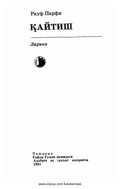

QRauf Parfining yigirma yillik ijodidan saralangan lirik she'rlar va sonetlar to'plami.
Ushbu to'plam taniqli o'zbek shoiri Rauf Parfining yigirma yillik ijodidan saralab olingan she'rlar va sonetlarni o'z ichiga oladi. Kitob shoirning lirik merosini va badiiy mahoratini namoyon etuvchi muhim asarlardan biridir.